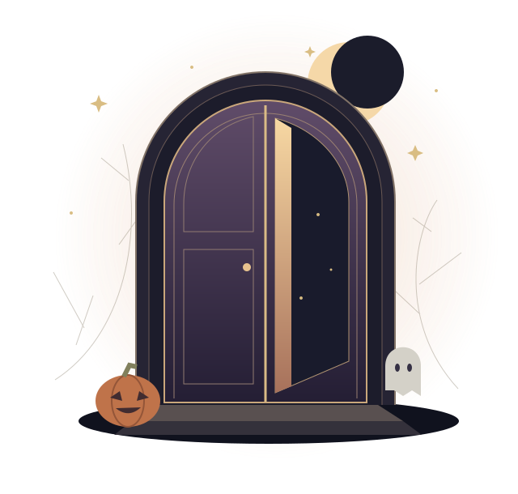

A LITTLE MAGIC, EVERY OCTOBER
2026 · HALLOWEEN ARCHIVE
夜がひらく、
出会いの扉。
ひとつの扉に、ひとりの物語。
ハロウィンに集まったみんなの、小さな記念館。
今年の出会いを、来年の宝物に。

KNOCK, KNOCK. WHO'S THERE?✦ ここに残るのは、ひとりひとりの物語。✦
THE ANNUAL COLLECTION
今年のとびら名簿準備中
みんなの物語を迎える準備中。
参加者名簿はまだ登録されていません。扉をひらく体験を、サンプルでご覧いただけます。
年鑑を読み込めませんでした。